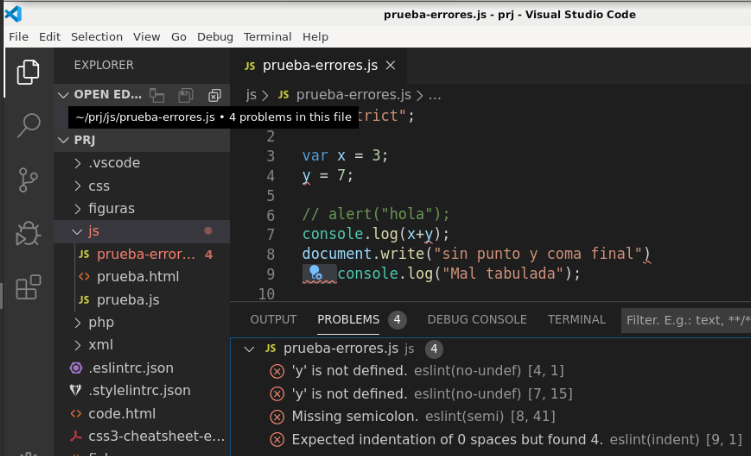

Linter JavaScript: eslint 24/25¶
1. Instalación Node en Debian 12¶
El linter de javascript eslint necesita node para su funcionamiento. Aunque no es necesario para estas prácticas usaremos un gestor de versiones para la instalación de node, el gestor nvm. Enlaces de nod
Los pasos a dar son:
# Download and install nvm:
curl -o- https://raw.githubusercontent.com/nvm-sh/nvm/v0.40.2/install.sh | bash
# estarting the shell
\. "$HOME/.nvm/nvm.sh"
# Download and install Node.js:
nvm install 22
# Verify the Node.js version:
node -v # Should print "v22.14.0".
nvm current # Should print "v22.14.0".
# Verifica versión de npm:
npm -v # Debería mostrar "10.9.2".
Otra posible opción sería instalar node (y npm) desde apt:
sudo apt update
sudo apt install nodejs npm
2. Instalar eslint¶
En la instalación de eslint puede tener algunas dificultades debido a la transición actual entre dos estilos de configuración. Los pasos a dar son:
- Iniciar el proyecto:
~$ mkdir mis-proyectos
~$ cd mis-proyectos/
~/mis-proyectos$ npm init -y
Wrote to /home/usuario/mis-proyectos/package.json:
{
"name": "mis-proyectos",
"version": "1.0.0",
"main": "index.js",
"scripts": {
"test": "echo \"Error: no test specified\" && exit 1"
},
"keywords": [],
"author": "",
"license": "ISC",
"description": ""
}
- Instalar ESLint:
~/mis-proyectos$ npm install eslint --save-dev
added 87 packages, and audited 88 packages in 2s
22 packages are looking for funding
run `npm fund` for details
found 0 vulnerabilities
~/mis-proyectos$
- Ejecutar el asistente de ESLint
~/mis-proyectos$ npx eslint --init
You can also run this command directly using 'npm init @eslint/config@latest'.
Need to install the following packages:
@eslint/create-config@1.7.0
Ok to proceed? (y) y
> mis-proyectos@1.0.0 npx
> create-config
@eslint/create-config: v1.7.0
✔ What do you want to lint? · javascript
✔ How would you like to use ESLint? · problems
✔ What type of modules does your project use? · esm
✔ Which framework does your project use? · none
✔ Does your project use TypeScript? · no / yes
✔ Where does your code run? · browser
The config that you've selected requires the following dependencies:
eslint, @eslint/js, globals
✔ Would you like to install them now? · No / Yes
✔ Which package manager do you want to use? · npm
☕️Installing...
added 1 package, changed 1 package, and audited 89 packages in 496ms
23 packages are looking for funding
run `npm fund` for details
found 0 vulnerabilities
Successfully created /home/usuario/mis-proyectos/eslint.config.mjs file.
~/mis-proyectos$
- Probar: añadir un archivo de prueba
echo "let a" > index.js
npx eslint index.js
Más Info: https://eslint.org/docs/latest/use/getting-started
3. Uso en VS Code¶
Para usar el linter desde el editor Vscode necesita además un plugin. El plugin usado en clase es ESLint (de Microsoft) que integra ESLint en VS Code.
El plugin muestras los errores en el editor y en la consola de errores:

Más Info: https://marketplace.visualstudio.com/items?itemName=dbaeumer.vscode-eslint
4. Reglas¶
Puede personalizar la configuración activando reglas adicionales, desactivado alguna de las recomendadas o modificando su configuración.
Modifique el fichero eslint.config.mjs añadiendo por ejemplo estas reglas
export default defineConfig([
{
files: ["**/*.{js,mjs,cjs}"],
plugins: { js },
extends: ["js/recommended"],
// aquí va rules
rules: {
// Buenas prácticas
eqeqeq: ['error', 'always'],
'no-var': 'error',
'prefer-const': 'error',
'no-unused-vars': ['warn', { argsIgnorePattern: '^_', varsIgnorePattern: '^_' }],
'no-console': 'warn',
// Estilo
semi: ['error', 'always'],
indent: ['error', 2],
'no-trailing-spaces': 'error',
},
},
Puede consultar todas las reglas (y cuáles son las recomendadas) en este enlace:https://denar90.github.io/eslint.github.io/docs/rules/.
También es posible modificar las reglas que se comprueban y el tipo de aviso (ninguno, warning, error) en el código del propio fichero usando configuration comments
5. Anexos¶
5.1. Aclaraciones¶
- Si en la ruta del fichero JavaScript hay varios ficheros de configuración se usa el más cercano al fichero fuente.